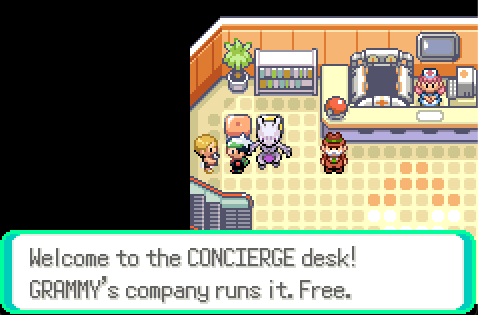

Everything that makes Emma's Emerald different from Emerald, in one place. The Change Log has the full history.
Starting out
Pick any Pokémon in the game as your starter: every evolutionary base form, including regional forms. RANDOM picks one for you; RANDOM+ picks one that can follow you. Shiny is a yes/no question.
Skip the intro from the moving truck and land at Littleroot's north path with the clock set.
Three difficulties, chosen at the start: Easy (classic Emerald trainers), Normal (curated gym leader sets, vanilla levels and team sizes), Hard (Radical Red: teams at the level cap, six Pokémon, held items, smart AI, party slots limited to 3 + badges).
Optional Randomizer: wild Pokémon, or wild and trainers, swapped for stat-matched species. Consistent per save.
Quality of life
Field Case: use Cut, Rock Smash, Strength, Surf, Waterfall, Dive, Fly, Flash, Defog, Sweet Scent and an escape move as soon as they are unlocked, with no move slots spent. Fly unlocks with the 2nd badge.
PokéVial: three full party heals anywhere, refilled by any Pokémon Center nurse.
Party-wide EXP share from the start. Reusable TMs. Type icons and move effectiveness shown in battle. IV and EV pages on the summary screen.
Move Relearner on the summary screen: any level-up move (including pre-evolution moves), egg move or TM move, free.
Concierge desk in every Pokémon Center: change a nature, change an ability (hidden included), and after the Hall of Fame rematch any boss or collect the ferry tickets.
DexNav for hunting specific Pokémon; walking up to the target is enough, running does not scare it.
Instant text, auto-run (hold B to walk), infinite repel and wild double battles are toggles in EXTRAS. Instant text is on by default.
After a white-out the nurse offers to send you straight back to the trainer you lost to.
Surf at Mach Bike speed, dive at running speed. Eggs hatch four times faster. Bag pockets sort with START.
Last-used Ball: press R in a wild battle to throw the Ball you used last; hold R and a direction to cycle.

GRAMMY's Concierge desk, found in every Pokémon Center.
Battles and difficulty
Level caps follow your badges (15 / 19 / 24 / 29 / 31 / 33 / 42 / 46, then 58 until you are Champion). Easy and Normal can switch the cap off in EXTRAS or when the nurse offers after a loss; Hard keeps it.
Gym leaders and the Elite Four run hand-built themed teams. Normal keeps them at vanilla size and level; Hard gives them full sets, items and the cap.
Terastallization: you receive the Tera Orb with the Rain Badge. Opponents only Terastallize on Hard, and only once you hold eight badges. Nobody Megas, Dynamaxes or uses Z-Moves.
Classic obedience (only traded Pokémon disobey), Emerald's badge stat boosts and 1.5x trainer experience are all back. Wild Pokémon pick moves at random on Easy, sensibly on Normal, cleverly on Hard.
Easy mode hands out five Rare Candies with every badge.
Pokémon, items and shops
Every Pokémon from Gen 1 to Gen 9 appears in the wild. Each route has its own tables for morning, day, evening and night. See the Walkthrough for exact lists.
Trade evolutions happen by level (37, or 35 for Karrablast and Shelmet); held-item trade evolutions use the item from the bag.
Marts are stocked by town: modern Poké Balls everywhere, evolution stones in Rustboro and Verdanturf, held evolution items in Slateport, Fallarbor and Fortree, competitive items in Mauville and Lavaridge, vitamins, Power items and EV berries in Mauville, and every Mint, Ability Capsule, Ability Patch, Bottle Cap and Exp. Candy at Lilycove's 3rd floor.
Every legendary, mythical, Ultra Beast and Paradox Pokémon stands somewhere in Hoenn as a static encounter, unlocking at 6 badges, 8 badges or after the Hall of Fame. See Legendaries and Side Quests.
EXTRAS menu (Start → OPTION → EXTRAS)
Cheats: 100 Rare Candies, max money, EXP multiplier (x1 to x100), Perfect IVs, Shiny hunting, Reveal Pokédex, Easy catch, Level cap toggle.
Quality of life: Instant text, Auto-run, Infinite Repel, Wild double battles, Set the clock.
Story tests (dev): jump straight to any family fight, the Elite Four, the Champion, or next to any legendary, with the right badges and a counter-team.